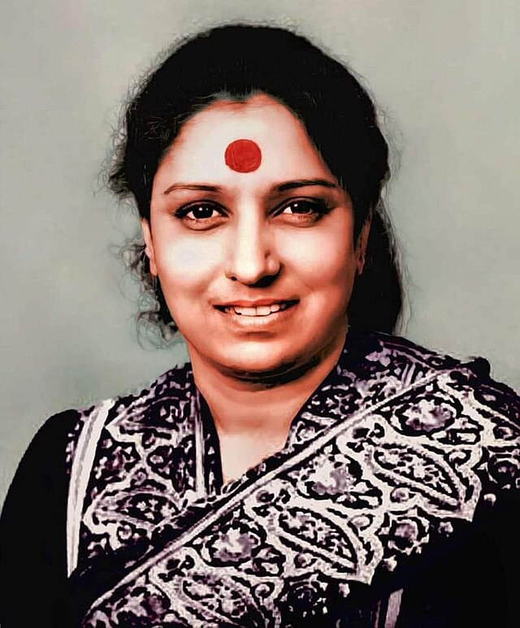

S. Janaki, affectionately known as "Janaki Amma" and revered as the Nightingale of South India, stands as an iconic figure in the realm of playback singing. With a career spanning over six decades, she has recorded over 48,000 songs in 17 languages, showcasing unparalleled versatility and mastery across various musical genres. A recipient of four National Film Awards and numerous State Film Awards, Janaki's contribution to Indian music is not only prolific but also deeply resonant, earning her a well-deserved reputation as one of the greatest playback singers in the country's cinematic history.
As a Malayali, some of my personal favorite songs sung by Janaki Amma in Malayalam cinema include:
- Mizhiyoram from Manjil Virinja Pookal (1980) - This melodious song captured the beauty of a rainy evening. Janaki Amma's soulful voice enhanced the mood perfectly.
- Olathumbathe Irrrune from Pappayude Swantham Appoos (1992) - A heartwarming lullaby that showcased Janaki Amma's ability to bring warmth and tenderness to any song.
- Moham Kondu Njan from Shesham Kazhchayil (1985) - A melodious song where her lively vocals added a beautiful touch to the on-screen moments.
- Naadha Nee Varum from Chamaram (1980) - Her powerful yet emotionally nuanced singing did full justice to the pathos of the separation in this classic song.
Janaki Amma had an unparalleled mastery over classical and folk genres. Her voice brought alive countless memorable characters on screen. With her versatile vocals and professional commitment, she made immense contributions to Indian film music over the decades. Janaki Amma will always be remembered as one of the greatest playback singers of all time.
Life and Career
S. Janaki, born on April 23, 1938, in Pallapatla, Repalle Taluka, Andhra Pradesh, India, is an illustrious Indian playback singer affectionately known as "Janaki Amma." Despite lacking formal training in classical music, her prodigious talent flourished. Janaki's journey commenced with her debut in the 1957 Tamil film "Vidhiyin Vilayattu," setting the stage for a remarkable career that spanned over six decades. Proficient in languages such as Tamil, Kannada, Malayalam, and Hindi, she showcased her versatility by recording over 48,000 songs in films, albums, TV, and radio. In 1959, she married V. Ramprasad, a supportive partner who accompanied her during most recordings until his demise in 1997.
Janaki's contribution to Malayalam cinema is particularly noteworthy, earning her the first Kerala State Film Award for Best Singer in 1970. Her command over the language and impeccable diction propelled her to great heights, becoming the most awarded non-Malayali artist in the Malayalam film industry. She received the Kerala State Film Award for Best Singer almost every year for 15 years. In 2017, Janaki marked the end of her illustrious 60-year singing career with a memorable concert in Mysuru. Notable among her many Malayalam hits are timeless solo tracks like "Mizhiyithalil" from "Onnaman" (2002) and the emotionally resonant "Amma Poovinum" from "10 Kalpanakal" (2016), showcasing her enduring impact on the industry.